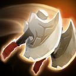
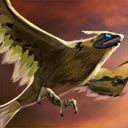
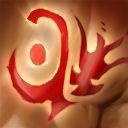
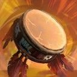
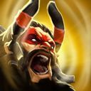
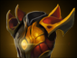
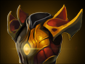

Dota 2 Builds
Beastmaster
Детство Карроха прошло несладко. Мать его умерла при родах. Отца, кузнеца при последнем короле Слома, казнили, растоптав насмерть, когда ребенку было пять лет. Тогда Карроха поселили в королевский зверинец, где он рос среди животных из королевского зверинца: львов, обезьян, оленей-падунов и других, менее известных существ, в которых не всякий верил. На седьмой год жизни парня королевский лазутчик привел во дворец новую тварь. Ее подтащили к королю, закованную в цепи, и та заговорила, хоть и не двигала ртом. Просила она об одном: свободе. Король лишь рассмеялся и приказал зверю выступать ему на потеху, а когда тот отказался, огрел его своим Диким скипетром и приказал отправить тварь в темницу. Следующие месяцы мальчик тайком проносил к существу еду и лекарства, но они лишь слегка отодвигали полное истощение. Без слов зверь говорил с мальчиком, и со временем их связь усилилась настолько, что Каррох понял — он может поддерживать разговор. Более того, он научился общаться со всеми обитателями королевского зверинца. В ночь, когда зверь умер, мальчик впал в ярость. Он повел чудищ войной на прислужников короля, отперев клетки и выпустив зверей на дворцовые земли. В погроме был насмерть закусан, заклеван и зацарапан и сам последний король. Пока царила неразбериха, Каррох освободил одного из королевских оленей, и тот поклонился в ответ, а затем, с Каррохом на спине, перемахнул через высокие стены дворца, унося того из проклятого места. Теперь повелитель зверей Каррох по прозвищу Beastmaster уже взрослый мужчина, но он не потерял способности говорить с дикими зверьми. Сирота из королевского зверинца превратился в неукротимого воина природы.
Способности/Abulities
Wild Axes
 Герой швыряет топоры, которые прорубают деревья и противников на своём пути и возвращаются обратно. Каждый топор задевает одного врага лишь единожды и увеличивает урон, получаемый от героя и его существ.

Способность: направленная на точку
Действует на: врагов
Тип урона: магический
Дальность применения: 1500
Радиус: 175
Дистанция полета топоров: 1500
Расстояние разлета топоров: 450
Увеличение урона за эффект: 6/8/10/12% (Талант: 8,5/10,5/12,5/14,5%)
Длительность эффекта: 12
Учась в одиночку выживать в дикой природе, Каррох приноровился использовать два томагавка, одинаково хорошо справляясь и с деревьями, и с врагами.Call of the Wild (Кабан)
 Герой призывает на поле битвы кабана-помощника.
Герой призывает на поле битвы кабана-помощника.
Способность: ненаправленная
Количество кабанов: 1
Длительность жизни: 60
Подружившись в детстве с удивительным зверем, Каррох научился взывать к помощи животных.Call of the Wild (Ястреб)
 Герой отправляет невидимого ястреба разведать территорию.Способность: направленная на область/юнита/автоприменение (с Aghanim's Shard)
Действует на: врагов (с Aghanim's Shard)
Длительность жизни: 60
Количество кабанов: 1
Дальность применения: глобальная
Подружившись в детстве с удивительным зверем, Каррох научился взывать к помощи животных.Inner Beast
 Высвобождает животную ярость союзников неподалёку, увеличивая скорость их атак.Способность: аура
Действует на: союзников
Радиус: 1200
Дополнительная скорость атаки: 10/20/30/40 (Талант: 20/30/40/50)
Длительность задержки ауры: 0,5
Способность пробуждать внутреннюю мощь других существ проявилась у Карроха ещё в тот день, когда король Слома сгинул в лапах своего зверинца.Drums of Slom
 Герой всё быстрее бьёт в свой барабан. Каждый удар наносит урон врагам вокруг и излечивает владельца способности и существ под его контролем на долю от наносимого урона. Герой не может бить в барабаны, если он обезмолвлен или оглушён.Способность: ненаправленная
Действует на: врагов/союзников
Тип урона: магический
Радиус: 600
Максимальное количество применений: 14
Урон за интервал: 110
Процент урона в виде исцеления (герой): 25%
Процент урона в виде исцеления (крипы): 5%
Длительность задержки ауры: 0
Максимальная продолжительность: 6
Ярость природы безвременна, и посвящённым в её секреты несложно пробудить эхо гнева, возликовавшего при крахе СломаPrimal Roar
 Герой издаёт громогласный рык, который оглушает цель и раскидывает всех противников на пути к ней. Все задетые враги получают урон, а у отлетевших в стороны врагов снижается скорость атаки и передвижения. Также на 3 секунды скорость передвижения героя и его существ увеличивается на 40%.Способность: направлена на врагов
Действует на: врагов
Тип урона: магический
Дальность применения: 600
Радиус дополнительной скорости: 900
Радиус откидывания: 300
Урон: 150/225/300
Замедление скорости передвижения: 60%
Замедление скорости атаки: 60
Дополнительная скорость передвижения союзникам: 40%
Длительность замедления: 3/3,5/4
Расстояние откидывания: 450
Длительность откидывания: 1
Длительность оглушения: 3/3,5/4
Длительность ускорения: 3/3,5/4
Beastmaster научился сливать все свои первобытные инстинкты в оглушающий вопль, сеющий смятение в рядах противника.
Сборка/Builds
Начальный закуп:


Основные предметы:


 



YOUTUBE:GREYSHARK

YOUTUBE:GREYSHARK
ЭТА СБОРКА В STEAM